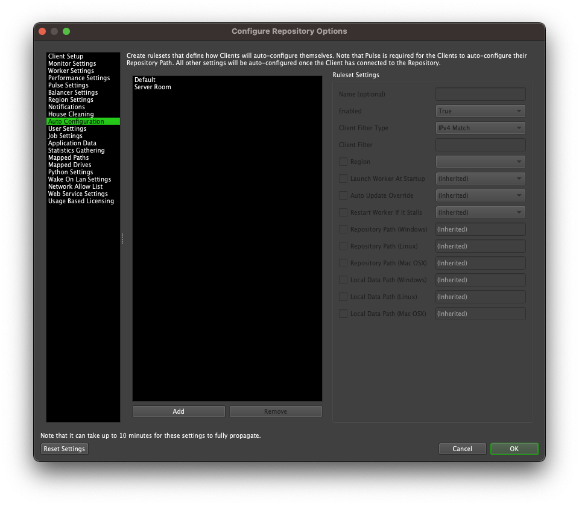
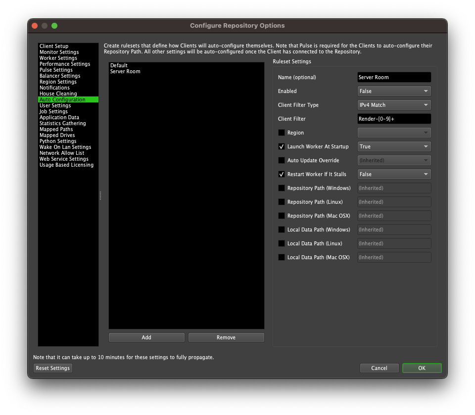

Auto Configuration¶
Overview¶
Auto Configuration allows you to configure many Client settings from a single location. When the Deadline applications start up, they will automatically pull these settings, save them locally, and apply them before fully initializing.
Note that Pulse must be running for the Deadline applications to pull the Repository Path setting. All the other settings are pulled directly from the Database once the applications are able to connect to it. Note that if Pulse isn’t running, the other settings will still be pulled directly from the Database. To configure and run Pulse, see the Pulse documentation.
Rulesets¶
You can set up Client Configuration Rulesets from the Auto Configuration section of the Repository Configuration. If you want to configure groups of Clients differently from others, you can add multiple Rulesets. This is useful if you have more than one Repository on your network, or if you want to configure your render nodes differently than your workstations.
New Rulesets can be added by pressing the Add button. You can give the Ruleset a name, enable the rule, and then choose a Client Filter Type to control which Clients will use this Ruleset. There are currently three types of Worker Filters:
Hostname Regex: You can use regular expressions to match a Client’s host name. If your Workers are using IPv6, this is probably the preferred method to use. Note that this is case-sensitive. For example:
.*host.* will match hostnames containing the word ‘host’ in lower case.
host.* will match hostnames starting with ‘host’.
.*[Hh]ost will match ending with ‘Host’ or ‘host’.
.* will match everything.
IP Regex: You can use regular expressions to match a Client’s IP address. This works with both IPv4 and IPv6 addresses. For example:
192.168..* will match IPv4 addresses not transported inside IPv6 starting with “192.168”.
[:fF]*192.168. should match IPv4 address even if they are carried over IPv6 addresses (ex “::ffff:192.168.2.128”).
.* will match everything.
IPv4 Match: You can specify specific IP addresses, or a range of IP addresses (by using wildcards or ranges). Note that this only works with IPv4. Do not use this for IPv6 addresses. For example:
192.168.0.1-150
192.168.0.151-255
192.168.*.*
*.*.*.*
Configurations are generated starting from the top rule working down one by one. When there is a match for the requesting Client, any properties in the rule which are not marked as ‘(Inherited)’ will override a previous setting. By default, Workers will use their local configuration for any property which is not set by a rule. Based on the example in the image below, all clients starting with the name ‘Render-‘ and ending with a whole number will use the same Repository Path and launch the Client at startup, while the ‘Default’ rule above it matches all Clients and sets their license server.
The remaining available options are:
- Licensing (DEPRECATED - starting with Deadline 10.1.23, a license is no longer required to run Deadline):
License Mode (DEPRECATED): The license mode to use. Choose between Floating and UsageBased.
License Server (DEPRECATED): For Floating Licensing. The license server setting. Use the format ‘@SERVER’, or if you have configured your license file to use a specific port, use ‘PORT@SERVER’.
Region: Auto-configure the Region option. This will be set after the Client has connected to the Repository and can be used to ensure certain Workers are categorized by Deadline Region as defined in the Repository Configuration.
Launch Worker At Startup: Whether or not the Worker should automatically launch when the Launcher starts up.
Auto Update Override: Whether or not launching the Client should trigger an automatic upgrade if it is available. Note that Deadline versions 10.4 and higher do not set write permissions to the install directory. If you wish to use automatic upgrades, you must manually grant access to the user you wish to perform automatic upgrades.
Restart Worker If It Stalls: If enabled, the Launcher will try to restart the Worker on the machine if it stalls.
Skip Permission Check: If enabled, read/write permissions are not checked when a Repository connection is validated.
Repository Path: This is the path to the Repository that the Worker will connect to. You can specify a different path for each operating system.
Local Data Path: The local path where the Client temporarily stores plugin and job data from the Repository during rendering. Note that this should be a local path to avoid conflicts and maintain performance. You can specify a different path for each operating system. More information about the Worker Local Data Path is available here.
The above options can also be controlled individually via Client Configuration of the deadline.ini file.

{kind=link}
{kind=link}